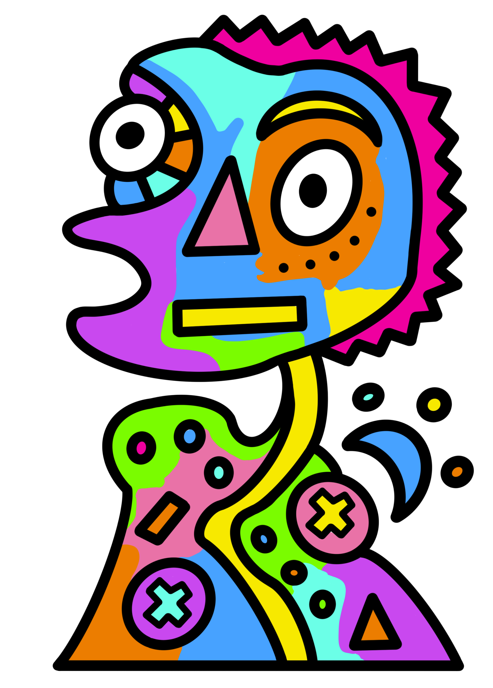
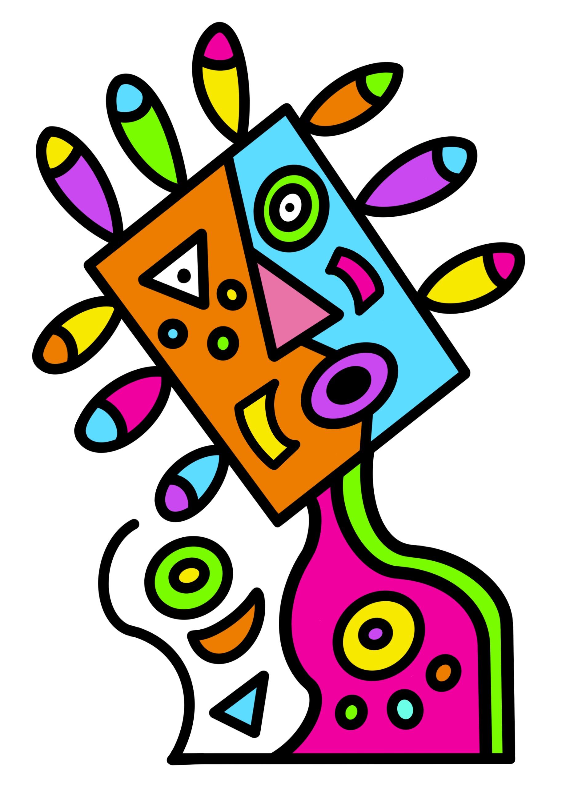
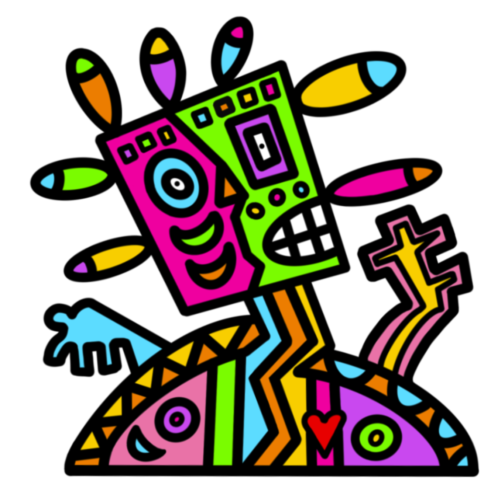
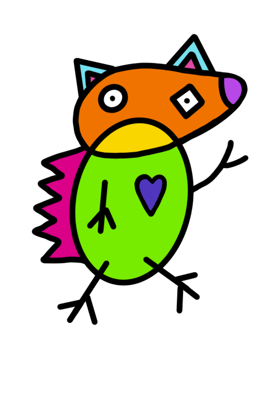
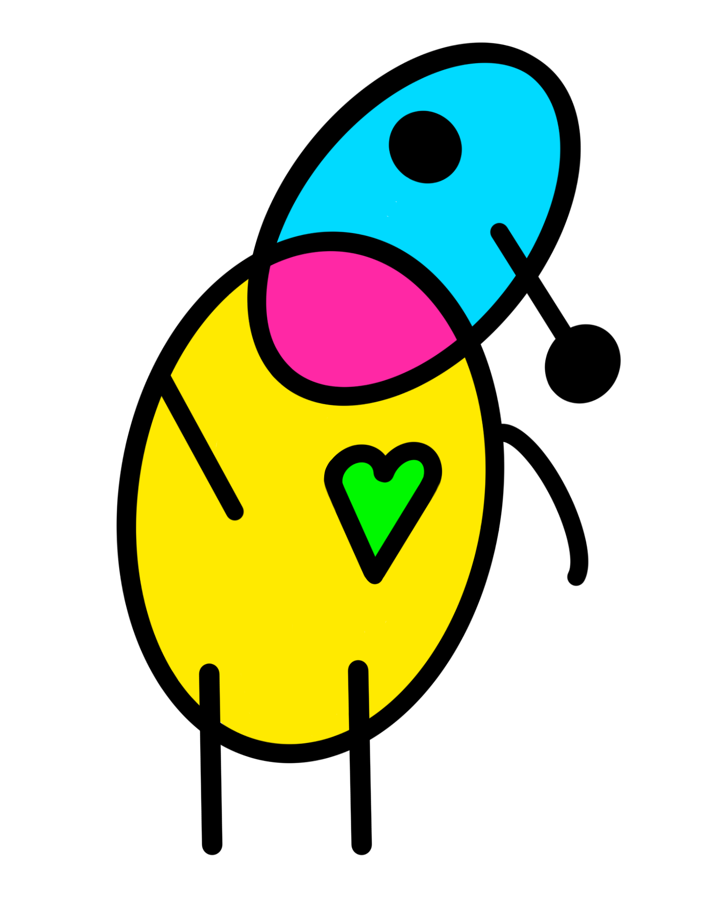
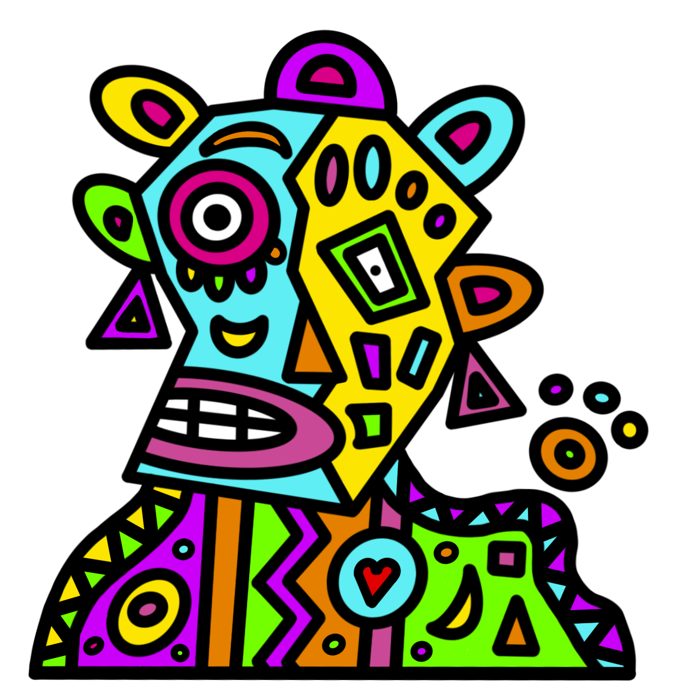
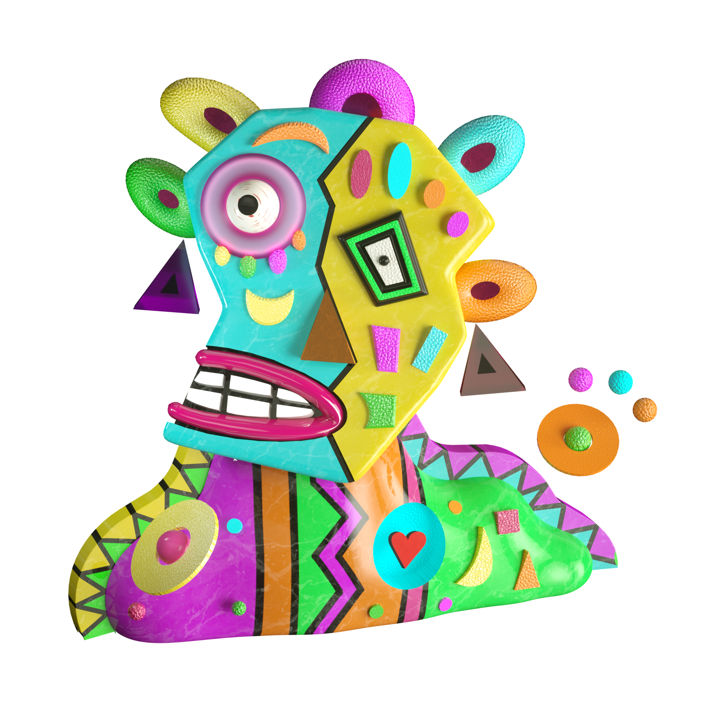

A walkable gallery
Four worlds, fifteen artworks. Ride up to a piece to read it, and into a portal to leave the world you are in.
WASD ride · drag to look · Space boost · Shift hop
Transcendence
WORLD 01
SEEN 00 / 15
Nearest piece
WASD ride · drag to look · Space boost · Shift hop